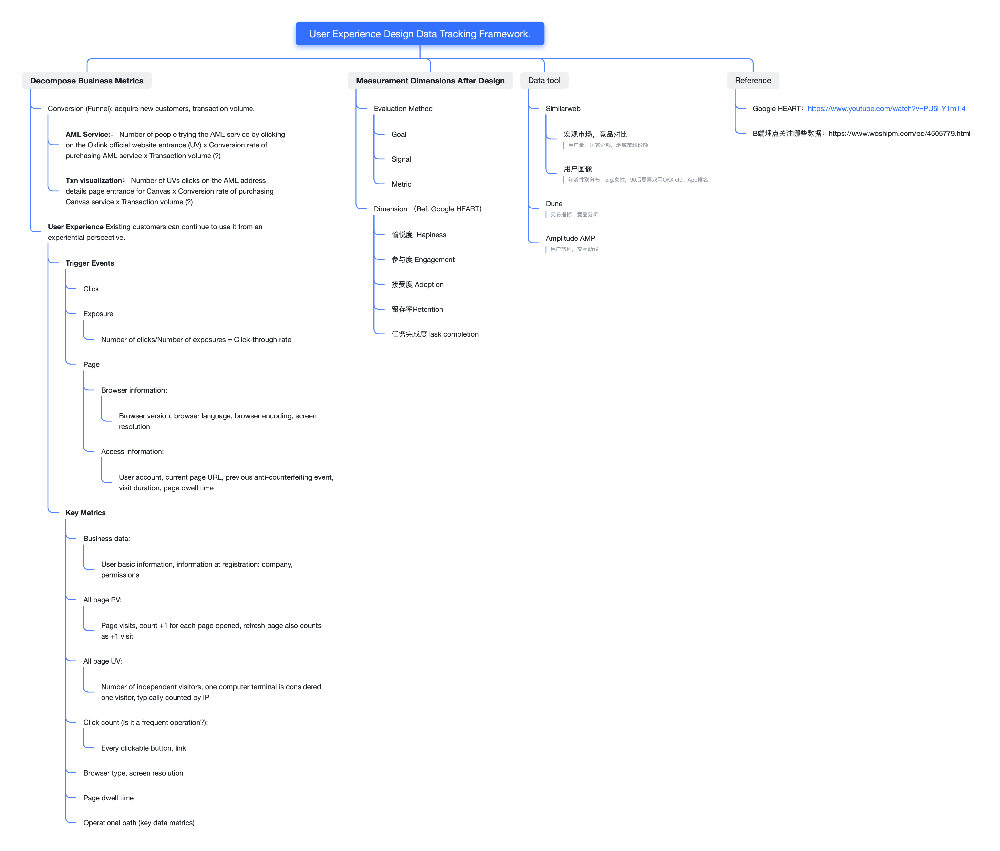
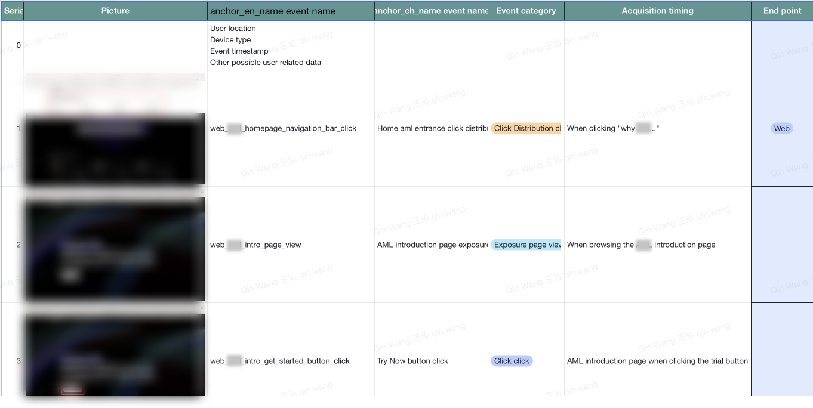
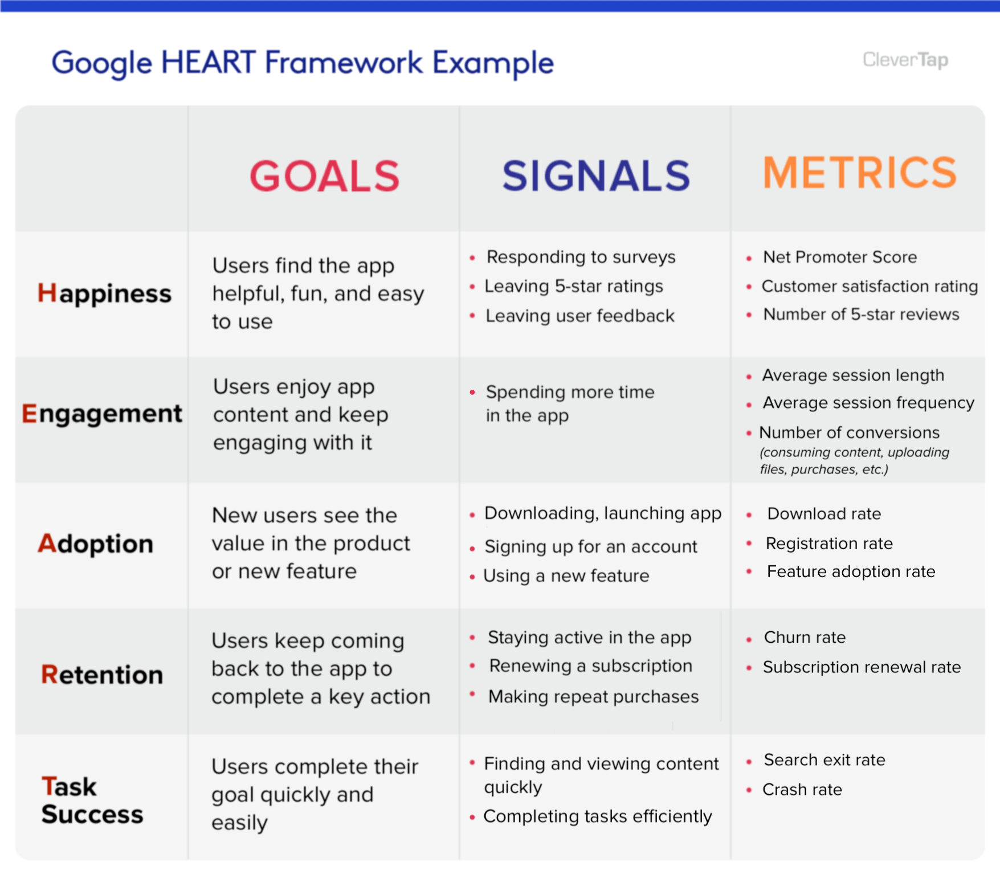

Tailored user experience data tracking framework

After lauching our mvp product, we will have users onboard, there is a need to set an event tracking framework to help us get insights how user react to the experience

experience evaluation metrics

Google HEART model
